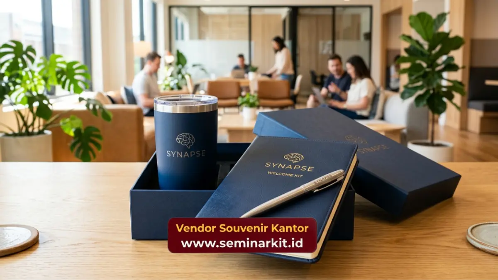

Souvenir karyawan baru untuk perusahaan startup idealnya berupa item simpel, fungsional, dan hemat anggaran seperti tumbler custom logo dan tote bag kanvas, karena budaya kerja startup umumnya lebih fleksibel dan mengutamakan efisiensi biaya operasional.
- Startup umumnya membutuhkan welcome kit yang lebih ringkas dibanding korporasi besar.
- Item yang dipilih sebaiknya sesuai dengan budaya kerja fleksibel dan santai.
- Anggaran onboarding startup perlu diatur agar tetap efisien meski rekrutmen berjalan cepat.
- Tumbler dan tote bag custom logo menjadi pilihan paling relevan untuk startup.
- Konsistensi identitas brand tetap penting meski dengan anggaran terbatas.
Apa Perbedaan Kebutuhan Souvenir Onboarding Startup dan Korporasi Besar?
Perbedaan kebutuhan souvenir onboarding startup dan korporasi besar terletak pada skala anggaran dan gaya desain. Startup umumnya memilih desain lebih simpel dan item lebih sedikit, sementara korporasi besar cenderung memberi paket lebih lengkap dengan anggaran per karyawan yang lebih tinggi.
Perbedaan ini bukan soal kualitas, melainkan penyesuaian terhadap ritme kerja startup yang sering merekrut secara bertahap dan membutuhkan fleksibilitas jumlah pesanan dalam waktu singkat.
Apakah Startup Tetap Perlu Souvenir Onboarding meski Anggaran Terbatas?
Startup tetap perlu souvenir onboarding meski anggaran terbatas, karena kesan pertama terhadap budaya kerja tetap berpengaruh pada motivasi karyawan baru, terlepas dari skala perusahaan.
Dengan memilih satu hingga dua item fungsional saja, startup tetap bisa memberi kesan profesional tanpa membebani anggaran operasional yang biasanya masih terbatas pada fase awal pertumbuhan bisnis. Pahami rekomendasi selengkapnya di panduan onboarding kit karyawan baru yang perlu disertakan.
Item Apa yang Cocok untuk Budaya Kerja Startup?
Item yang cocok untuk budaya kerja startup adalah barang simpel dan multifungsi, seperti tumbler custom logo, tote bag kanvas, dan notebook ringkas, karena sesuai dengan gaya kerja yang santai namun tetap terlihat profesional.
Tumbler Custom Logo untuk Kebutuhan Harian
Tumbler tetap menjadi pilihan utama di lingkungan startup karena dipakai setiap hari, baik saat bekerja di kantor maupun ruang kerja bersama atau co-working space yang sering digunakan startup pada fase awal. Pilihan tumbler custom logo menjadi investasi jangka panjang untuk branding tim.
Tote Bag Kanvas sebagai Item Kasual
Tote bag kanvas custom logo cocok dengan gaya kerja startup yang cenderung kasual. Item ini praktis dibawa membawa laptop atau dokumen ringan sekaligus menampilkan identitas brand secara natural.
Notebook Ringkas dengan Desain Simpel
Notebook ukuran ringkas dengan desain cover simpel lebih relevan dibanding notebook tebal bergaya formal, karena menyesuaikan ritme kerja startup yang dinamis dan sering berpindah tempat kerja.

Bagaimana Startup Mengatur Anggaran Souvenir Onboarding?
Cara startup mengatur anggaran souvenir onboarding adalah dengan menetapkan satu item utama sebagai standar, lalu menambah item lain hanya jika alokasi anggaran masih tersedia setelah kebutuhan operasional utama terpenuhi.
Beberapa pendekatan yang relevan untuk startup:
- Menetapkan tumbler sebagai item wajib dengan anggaran tetap per karyawan baru.
- Memesan secara berkala mengikuti jadwal rekrutmen, bukan sekaligus dalam jumlah besar.
- Memilih teknik cetak logo yang efisien biaya namun tetap rapi hasilnya.
- Menyesuaikan desain kemasan sederhana tanpa mengurangi kesan profesional.
Kesimpulan
Souvenir karyawan baru untuk startup sebaiknya simpel, fungsional, dan disesuaikan dengan anggaran yang fleksibel mengikuti ritme rekrutmen. Tumbler dan tote bag custom logo menjadi pilihan paling relevan untuk menjaga identitas brand tanpa membebani biaya operasional.
Vendor Souvenir Kantor melayani pemesanan fleksibel dengan kuantitas kecil hingga besar, cocok untuk kebutuhan onboarding startup yang dinamis. Konsultasikan kebutuhan souvenir karyawan baru startup Anda melalui vendorsouvenirkantor.web.id.

Banner promosi: klik gambar untuk langsung terhubung ke WhatsApp tim sales.